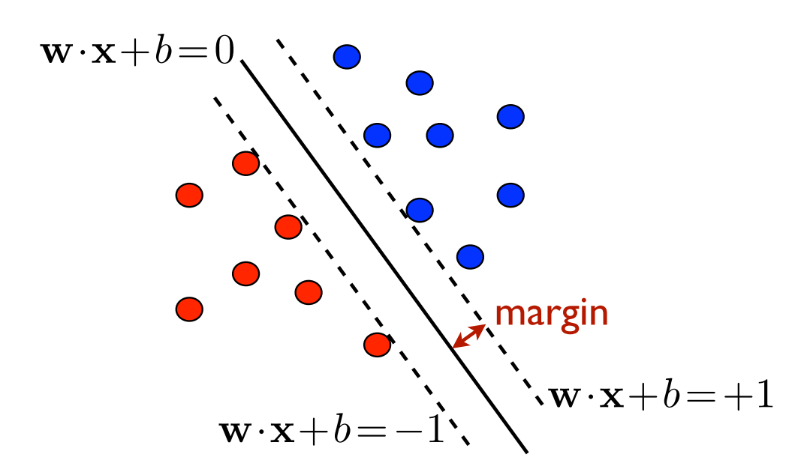

Support Vector Machines
47 minutes
As always, we ask the following questions as we encounter a new learning algorithm:
- Classification or regression?
- Classification—default is binary
- Supervised or unsupervised?
- Supervised—training data are labeled
- Parametric or non-parametric?
- Non-Parametric
- it does not make any assumption about the data
- the number of parameters not fixed across different datasets
- Non-Parametric
A Motivating Example
Let us ask the curious question: can we learn to predict party affiliation of a US national from their age (x_1) and years of education (x_2)?
Number of features: n=2.
Feature space: \mathcal{X} is a subset of \mathbb{R}^2.
Target space: \mathcal{Y}={
RED,BLUE}.
Learning Objective
We are trying to:
separate our training examples by a line.
once we have learned a separating line, an unseen test point can be classified based on which side of the hyperplane the point is.
Summary
In summary, the SVM tries to learn from data a linear decision boundary that fully separates the training data.
Before we talk about the mathematical formulation, let us discuss the pros and cons.
Pros
- Very intuitive
- Efficient algorithms are available
- Linear Programming Problem
- Perceptron (Rosenblatt 1958)
- Easily generalized to a higher-dimensional feature space
- decision boundary: line (n=2), plane (n=3), hyperplane (n\geq3)
Cons
- There are infinitely many separating hyperplanes
- maximum-margin
- The data may not be always linearly separable
- soft-margin
- Kernel methods
The Separable Case (Hard-Margin)
Let’s assume that the data points are linearly separable. Out of the infinitely many separating lines, we find the one with the largest margin.
Mathematical Formulation
Feature Space:
\mathcal{X}\subset\mathbb{R}^n is an n-dimensional space.
feature vector \pmb{x} is an n\times 1 vector
Target Space:
- \mathcal{Y}=\{-1, 1\}
Training Data:
size N
\mathcal{D}=\{(\bold{x}_1,y_1),\ldots,(\bold{x}_N,y_N)\}
- each \bold{x}_i\in\mathcal{X}
- each y_i\in\mathcal{Y}
Objective
Find a hyperplane \langle\bold{w},\bold{x}\rangle+b=0. such that
all sample points are on the correct side of the hyperplane, i.e., y_i(\langle\bold{w},\bold{x_i}\rangle+b)\geq0\text{ for all }i=1,\ldots,N
the margin (distance to the closed sample point) \rho=\min_{i\in[1, N]}\frac{|\langle\bold{w},\bold{x_i}\rangle|+b}{\|\bold{w}\|} is maximum

The good news is a unique solution hyperplane exists—so long as the sample points are linearly separable.
Solving the Optimization Problem (optional)
The primal problem can be stated as \min_{\bold{w},b}\frac{1}{2}\|\bold{w}\|^2 subject to: y_i(\langle\bold{w},\bold{x_i}\rangle+b)\geq1\text{ for all }i\in[1,N] This is a convex optimization problem with a unique solution (\bold{w}^*,b^*).
Hence, the problem can be solved using quadratic programming (QP).
Moreover, the normal vector \pmb{w}^* is a linear combination of the training feature vectors: \bold{w^*}=\alpha_1\bold{x_1}+\ldots+\alpha_N\bold{x_N}. If the i-th training vector appears in the above linear combination (i.e., \alpha_i\neq0), then it’s called a support vector.
Decision Rule
For an unseen test data-point with feature vector \pmb{x}, we classify using the following rule: \bold{x}\mapsto\text{sign}(\langle\bold{w}^*,\bold{x}\rangle+b^*) =\text{sgn}\left(\sum_{i=1}^N\alpha_iy_i\langle\bold{x_i},\bold{x}\rangle+b^*\right).
The Non-Separable Case (Soft-Margin)
In real applications, the sample points are never separable. In that case, we allow for exceptions.
We would not mind a few exceptional sample points lying inside the maximum margin or even on the wrong side of the margin. However, the less number of exceptions, the better.
We toss a hyper-parameter C\geq0 (known as the regularization parameter) in to our optimization.
Solving with Slack Variables
The primal problem is to find a hyperplane (given by the normal vector \bold{w}\in\mathbb{R}^n and b\in\mathbb{R}) so that \min_{\bold{w},b,\bold{\xi}}\left(\frac{1}{2}\|\bold{w}\|^2 + C\sum_{i=1}^N\xi^2_i\right) subject to: y_i(\bold{w}\cdot\bold{x_i}+b)\geq1-\xi_i\text{ for all }i\in[N] Here, the \bold{\xi}=(\xi_1,\ldots,\xi_N) is called the slack.
This is a also convex optimization problem with a unique solution.
However, in order to get the optimal solution, we consider the dual problem. For more details (Mohri, Rostamizadeh, and Talwalkar 2018, chap. 5).
Consequently the objective of the optimization becomes two-fold:
maximize the margin
limit the total amount of slack.
Choosing C
Some of the common choices are 0.001, 0.01, 0.1, 1.0, 100, etc. However, we usually use cross-validation to choose the best value for C.
Non-Linear Boundary
For datasets, the inherit decision boundary is non-linear.
- Can our SVM be extended to handle such cases?
Kernel Methods
A kernel K:\mathcal{X}\times\mathcal{X}\to\mathbb{R}^+ mimics the concept of inner-product, but for a more general Hilbert Space. Some of the good (for optimization) kernels are:
Linear Kernel: hyperplane separation or usual inner-product \mathcal K(\bold{x}, \bold{x}')=\langle\bold{x}, \bold{x}'\rangle
Radial Basis Function (RBF): \mathcal K(\bold{x}, \bold{x}')=\exp{\left(-\frac{\|\bold{x}-\bold{x}'\|^2}{2\sigma^2}\right)}.
Digit Recognition using SVM
Conclusion
Theoretically well-understood.
Extremely promising in applications.
Works well for balanced data. If not balanced:
- resample
- use class weights
Primarily a binary classifier. However, multi-class classification can be done using:
- one-vs-others
- one-vs-one
Resources
- Books:
- Introduction to Statistical Learning, Chapter 9.
- Code: